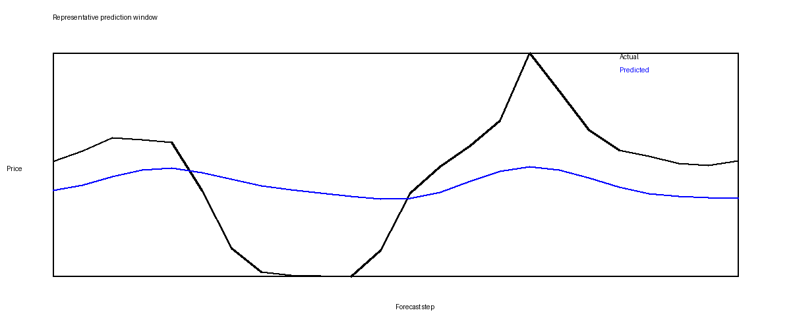
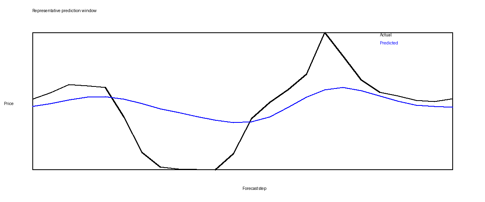
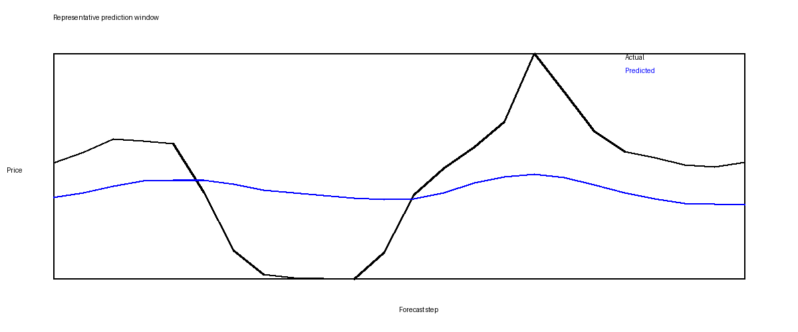
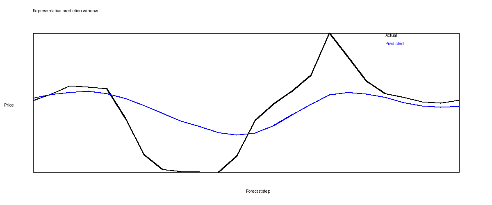
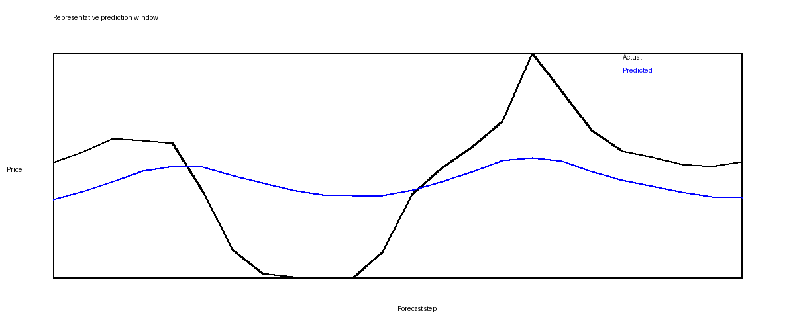
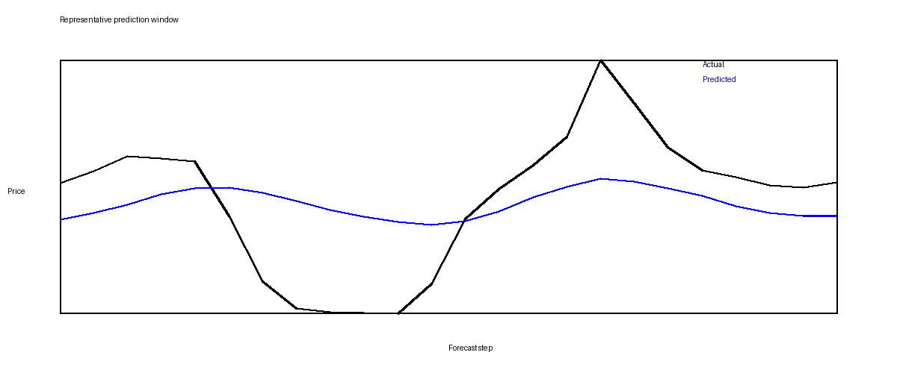

Best Test MAE
26.5345
CNN-xLSTM + norm
Best Test RMSE
39.3053
CNN-xLSTM + wavelet
Best CNN-BiLSTM Run
28.2966
MAE for CNN-BiLSTM + wavelet
Final Test Metrics
| Experiment | Preprocess | Test MAE | Test RMSE | Test MAPE |
|---|---|---|---|---|
| CNN-BiLSTM | norm | 29.6499 | 41.2486 | 4114.6316 |
| CNN-BiLSTM | wavelet | 28.2966 | 39.3126 | 3141.0965 |
| CNN-BiLSTM | patch | 31.2233 | 42.6750 | 4408.1151 |
| CNN-xLSTM | norm | 26.5345 | 39.3580 | 4172.5943 |
| CNN-xLSTM | wavelet | 27.1211 | 39.3053 | 3918.8283 |
| CNN-xLSTM | patch | 28.8341 | 40.6153 | 4161.9200 |
MAE Comparison
Shorter bars are better because error is lower.
RMSE Comparison
Shorter bars are better because error is lower.
Forecast Plots
These plots compare predicted and actual electricity prices on the test set. They are tracked copies of the completed run outputs so this page remains visible after committing.
Normalization


Wavelet Transform


PatchTST-Style Patch Encoding


Model Difference
| Shared frontend | Both use the same temporal CNN encoder. |
|---|---|
| CNN-BiLSTM | CNN features feed into a bidirectional LSTM. |
| CNN-xLSTM | CNN features feed into the documented in-repo xLSTM-inspired recurrent stack. |
| Observed tradeoff | xLSTM improves MAE/RMSE here, but takes much longer to train. |
Preprocessing Readout
| norm | Best MAE overall with CNN-xLSTM. |
|---|---|
| wavelet | Best RMSE overall with CNN-xLSTM. |
| patch | Weakest test results in this batch for both models. |
| MAPE | Unstable because target values can be close to zero. |
Source Files
Related tracked summaries: results snapshot, model comparison report, execution status.